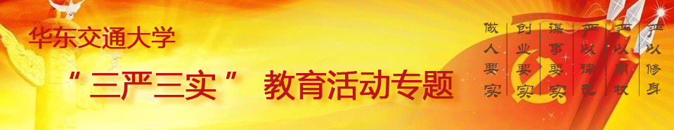
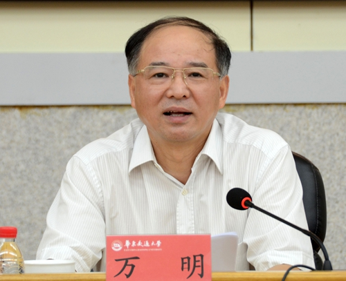
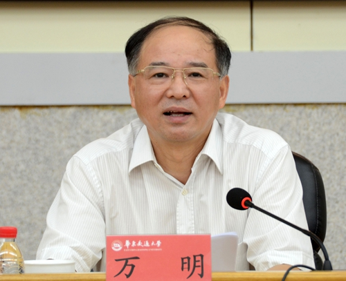
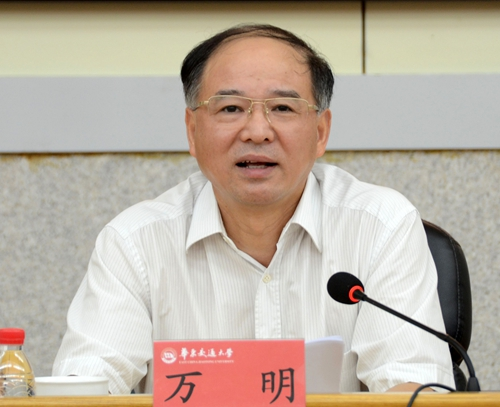
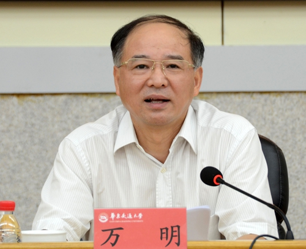
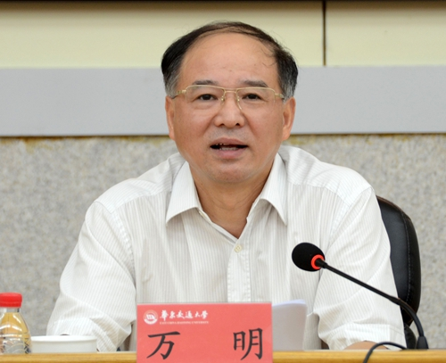

学习园地
·
习近平：干在实处永无止境 走在前列要谋新篇
·
习近平五谈“三严三实”：领导干部要树立和发扬好的作风
·
刘云山：努力营造良好政治生态
·
“三严三实”是党性教育的重要遵循
·
新华时评·“三严三实”一评：让人民群众当“评委”
·
新华时评·“三严三实”二评:严以修身重在坚定信仰
·
新华时评·“三严三实”三评：严以用权当心中有戒
·
新华时评·“三严三实”四评：严以律己重在自重、自省、自律
·
新华时评·“三严三实”五评：谋事要实考验领导干部政绩观

1
2
3
4
<
>
工作动态
·
我校部署在领导干部中开展“三严三实”专题教育工作
·
我校召开“三严三实”专题教育动员部署暨党课报告会
·
万明书记上“三严三实”专题党课
·
全校“三严三实”专题教育正式启动 校党委书记万明做专题党课报告
相关文件
·
中共中央办公厅印发三严三实教育方案
·
何金平：深入进行学习“三严三实”专题教育
·
江西省纪委监察厅机关动员部署“三严三实”专题教育
·
江西省“三严三实”专题教育党课暨动员部署视频会议召开
先进榜样
·
欧阳自立：带着母亲上学的“女强人”
·
张海龙：我的大学不迷茫
·
乐观鲁甸孩子潘垚：失去后才更懂珍惜
·
曹立勇：脚踏实地 勇于挑战 成就未来
·
殷君：做一棵向阳的常青树
典型案例
·
学习践行“三严三实”先进典型
华东交通大学新闻中心日新网


 


